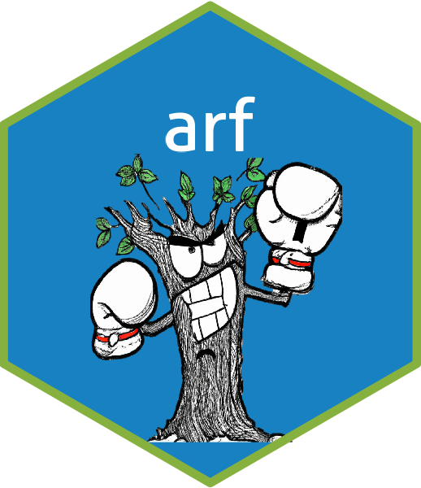

Package index
-
arfarf-package - arf: Adversarial Random Forests
-
adversarial_rf() - Adversarial Random Forests
Density estimation and generation
Learn leaf parameters, then sample, impute or evaluate likelihoods and expectations, optionally conditioned on evidence.
-
arf-optionsarf.backendarf.verbosearf.block_rows - arf package options